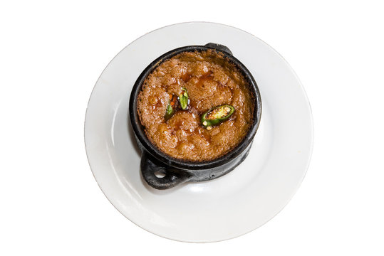
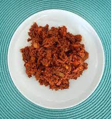
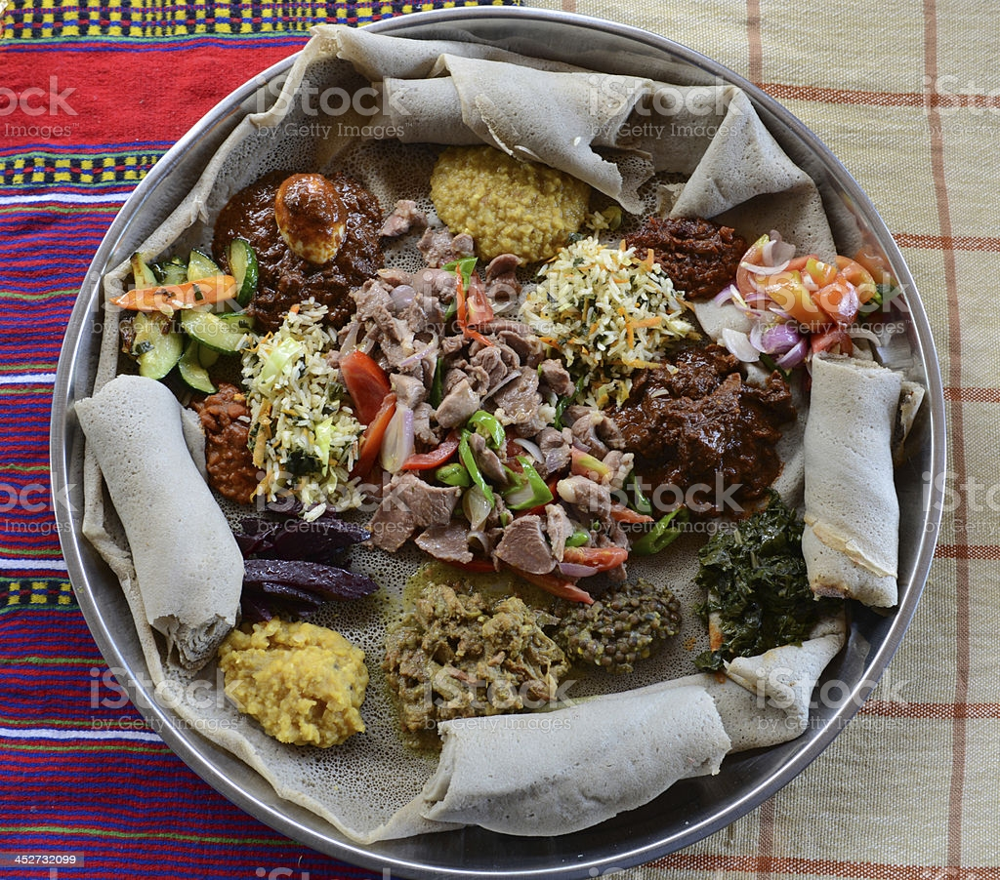

Restaurants and Bars
Our Restaurants Serve several dishes for wide array of guests tastes.
Restaurant is Managed by experienced chef serving the following cuisines:


Firfir
Price : 55.00/-
Firfir is a traditional Ethiopian dish that has been around for centuries.
Doro
Price : 150.00/-
A central ingredient of Doro Wat is Berbere, a fiery, bright red and flavorful
Ethiopian spice blend.

Beyaynetu
Price : 75.00/-
it's made up of a mix of vegan curries and vegetables served on a plate of injera.
Shiro
Price : 60.00/-
Very authentic recipe for classic Ethiopian Shiro Wat. Using berbere spice,
niter kibbeh, and chickpea flour.